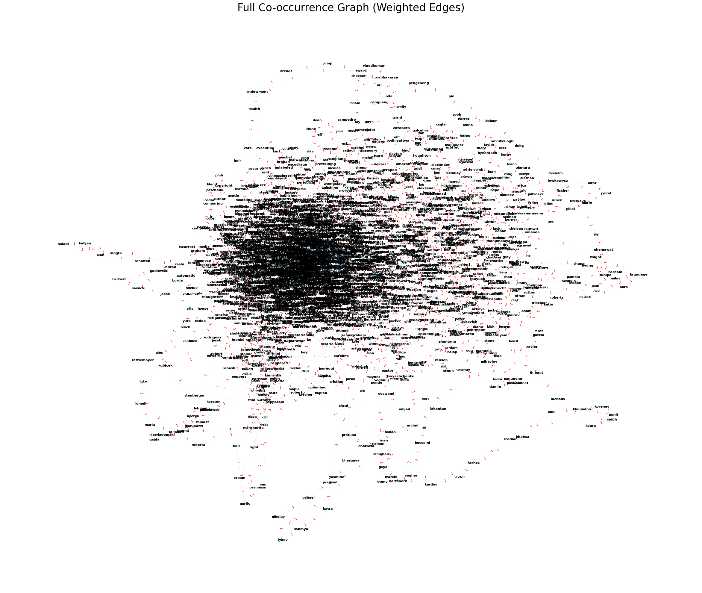

mencari keyword#
pip install PyMuPDF nltk networkx scipy matplotlib arxiv
Collecting PyMuPDF
Downloading pymupdf-1.26.7-cp310-abi3-manylinux_2_28_x86_64.whl.metadata (3.4 kB)
Requirement already satisfied: nltk in /usr/local/lib/python3.12/dist-packages (3.9.1)
Requirement already satisfied: networkx in /usr/local/lib/python3.12/dist-packages (3.6.1)
Requirement already satisfied: scipy in /usr/local/lib/python3.12/dist-packages (1.16.3)
Requirement already satisfied: matplotlib in /usr/local/lib/python3.12/dist-packages (3.10.0)
Collecting arxiv
Downloading arxiv-2.3.1-py3-none-any.whl.metadata (5.2 kB)
Requirement already satisfied: click in /usr/local/lib/python3.12/dist-packages (from nltk) (8.3.1)
Requirement already satisfied: joblib in /usr/local/lib/python3.12/dist-packages (from nltk) (1.5.2)
Requirement already satisfied: regex>=2021.8.3 in /usr/local/lib/python3.12/dist-packages (from nltk) (2025.11.3)
Requirement already satisfied: tqdm in /usr/local/lib/python3.12/dist-packages (from nltk) (4.67.1)
Requirement already satisfied: numpy<2.6,>=1.25.2 in /usr/local/lib/python3.12/dist-packages (from scipy) (2.0.2)
Requirement already satisfied: contourpy>=1.0.1 in /usr/local/lib/python3.12/dist-packages (from matplotlib) (1.3.3)
Requirement already satisfied: cycler>=0.10 in /usr/local/lib/python3.12/dist-packages (from matplotlib) (0.12.1)
Requirement already satisfied: fonttools>=4.22.0 in /usr/local/lib/python3.12/dist-packages (from matplotlib) (4.61.0)
Requirement already satisfied: kiwisolver>=1.3.1 in /usr/local/lib/python3.12/dist-packages (from matplotlib) (1.4.9)
Requirement already satisfied: packaging>=20.0 in /usr/local/lib/python3.12/dist-packages (from matplotlib) (25.0)
Requirement already satisfied: pillow>=8 in /usr/local/lib/python3.12/dist-packages (from matplotlib) (11.3.0)
Requirement already satisfied: pyparsing>=2.3.1 in /usr/local/lib/python3.12/dist-packages (from matplotlib) (3.2.5)
Requirement already satisfied: python-dateutil>=2.7 in /usr/local/lib/python3.12/dist-packages (from matplotlib) (2.9.0.post0)
Collecting feedparser~=6.0.10 (from arxiv)
Downloading feedparser-6.0.12-py3-none-any.whl.metadata (2.7 kB)
Requirement already satisfied: requests~=2.32.0 in /usr/local/lib/python3.12/dist-packages (from arxiv) (2.32.4)
Collecting sgmllib3k (from feedparser~=6.0.10->arxiv)
Downloading sgmllib3k-1.0.0.tar.gz (5.8 kB)
Preparing metadata (setup.py) ... ?25l?25hdone
Requirement already satisfied: six>=1.5 in /usr/local/lib/python3.12/dist-packages (from python-dateutil>=2.7->matplotlib) (1.17.0)
Requirement already satisfied: charset_normalizer<4,>=2 in /usr/local/lib/python3.12/dist-packages (from requests~=2.32.0->arxiv) (3.4.4)
Requirement already satisfied: idna<4,>=2.5 in /usr/local/lib/python3.12/dist-packages (from requests~=2.32.0->arxiv) (3.11)
Requirement already satisfied: urllib3<3,>=1.21.1 in /usr/local/lib/python3.12/dist-packages (from requests~=2.32.0->arxiv) (2.5.0)
Requirement already satisfied: certifi>=2017.4.17 in /usr/local/lib/python3.12/dist-packages (from requests~=2.32.0->arxiv) (2025.11.12)
Downloading pymupdf-1.26.7-cp310-abi3-manylinux_2_28_x86_64.whl (24.1 MB)
━━━━━━━━━━━━━━━━━━━━━━━━━━━━━━━━━━━━━━━━ 24.1/24.1 MB 93.6 MB/s eta 0:00:00
?25hDownloading arxiv-2.3.1-py3-none-any.whl (11 kB)
Downloading feedparser-6.0.12-py3-none-any.whl (81 kB)
━━━━━━━━━━━━━━━━━━━━━━━━━━━━━━━━━━━━━━━━ 81.5/81.5 kB 6.1 MB/s eta 0:00:00
?25hBuilding wheels for collected packages: sgmllib3k
Building wheel for sgmllib3k (setup.py) ... ?25l?25hdone
Created wheel for sgmllib3k: filename=sgmllib3k-1.0.0-py3-none-any.whl size=6046 sha256=46e54cea63a2f351f92776215fee8b8f20df849357322787fc3519e44e30ebe7
Stored in directory: /root/.cache/pip/wheels/03/f5/1a/23761066dac1d0e8e683e5fdb27e12de53209d05a4a37e6246
Successfully built sgmllib3k
Installing collected packages: sgmllib3k, PyMuPDF, feedparser, arxiv
Successfully installed PyMuPDF-1.26.7 arxiv-2.3.1 feedparser-6.0.12 sgmllib3k-1.0.0
Download Papernya#
import arxiv
import fitz # PyMuPDF
# Initialize the arXiv client
client = arxiv.Client()
# Define your search query using the ArXiv ID of the paper identified from text extraction
search_query = "2310.04406" # 'From Local to Global: A GraphRAG Approach to Query-Focused Summarization'
# Search for the paper
search = arxiv.Search(id_list=[search_query])
results = list(client.results(search))
if results:
paper = results[0]
arxiv_id = paper.entry_id.split('/')[-1] # Extracting the ID part
abstract = paper.summary
else:
arxiv_id = "N/A"
abstract = "Paper not found."
print(f"ArXiv ID: {arxiv_id}")
print(f"Abstract: {abstract[:500]}...")
ArXiv ID: 2310.04406v3
Abstract: While language models (LMs) have shown potential across a range of decision-making tasks, their reliance on simple acting processes limits their broad deployment as autonomous agents. In this paper, we introduce Language Agent Tree Search (LATS) -- the first general framework that synergizes the capabilities of LMs in reasoning, acting, and planning. By leveraging the in-context learning ability of LMs, we integrate Monte Carlo Tree Search into LATS to enable LMs as agents, along with LM-powered...
memecah paper per kalimat#
import pandas as pd
import nltk
from nltk.tokenize import sent_tokenize
import fitz # Import fitz for PDF processing
# Download necessary NLTK data if not already downloaded
nltk.download('punkt', quiet=True)
nltk.download('punkt_tab', quiet=True) # Added to download the missing resource
# Assuming 'results' is available from a previous cell (e.g., d340ddf5)
# This logic ensures 'text' is defined within this cell's scope.
paper = results[0]
pdf_path = paper.download_pdf()
doc = fitz.open(pdf_path)
text = ''
for page in doc:
text += page.get_text()
sentences = sent_tokenize(text)
df = pd.DataFrame(sentences, columns=['kalimat'])
df
| kalimat | |
|---|---|
| 0 | Language Agent Tree Search Unifies Reasoning, ... |
| 1 | In\nthis paper, we introduce Language Agent Tr... |
| 2 | By leveraging the in-context\nlearning ability... |
| 3 | A key feature of our ap-\nproach is the incorp... |
| 4 | Our\nexperimental evaluation across diverse do... |
| ... | ... |
| 848 | The initial\nsearch results were not the produ... |
| 849 | Next time, I will do search[“vegetarian bacon”... |
| 850 | I will check that the new results will fulfill... |
| 851 | I will continue to\nrefine my searches so that... |
| 852 | Previous trial: trajectory Reflection:”’\n23 |
853 rows × 1 columns
membersihkan kalimat#
import nltk
from nltk.corpus import stopwords
from nltk.tokenize import word_tokenize
import string
import networkx as nx
# Ensure NLTK resources are downloaded (redundant but safe if not already done)
nltk.download('punkt', quiet=True)
nltk.download('stopwords', quiet=True)
# Get sentences from the DataFrame created in cell fo-8nFIPUcGO
# Assuming 'df' DataFrame is available from a previous cell.
sentences_from_df = df['kalimat'].tolist()
lowercase_sentences = [s.lower() for s in sentences_from_df]
# Preprocess text
processed_tokens = []
stop_words = set(stopwords.words('english'))
for sentence in lowercase_sentences:
word_tokens = word_tokenize(sentence)
filtered_sentence = []
for w in word_tokens:
# Remove punctuation and non-alphabetic tokens, and remove stopwords
if w.isalpha() and w not in stop_words:
filtered_sentence.append(w)
processed_tokens.extend(filtered_sentence)
tokens = processed_tokens
print(f"Total preprocessed tokens: {len(tokens)}")
print(f"First 20 preprocessed tokens: {tokens[:20]}")
# Define window size for co-occurrence graph
window_size = 2 # Using the window_size from the kernel state
# Definition of get_cooccurrence_graph function (moved from a previous cell)
def get_cooccurrence_graph(tokens, window_size):
G = nx.Graph()
for i, word1 in enumerate(tokens):
# Add word1 as a node
if word1 not in G:
G.add_node(word1)
# Iterate through the window around word1
for j in range(i + 1, min(i + 1 + window_size, len(tokens))):
word2 = tokens[j]
# Add word2 as a node
if word2 not in G:
G.add_node(word2)
# Add or update edge weight between word1 and word2
if G.has_edge(word1, word2):
G[word1][word2]['weight'] += 1
else:
G.add_edge(word1, word2, weight=1)
print(f"Co-occurrence graph built with {G.number_of_nodes()} nodes and {G.number_of_edges()} edges.")
return G
# Call the get_cooccurrence_graph function
cooccurrence_graph = get_cooccurrence_graph(tokens, window_size)
print(f"Co-occurrence graph created with {cooccurrence_graph.number_of_nodes()} nodes and {cooccurrence_graph.number_of_edges()} edges.")
# Added this comment to ensure re-execution and define cooccurrence_graph.
Total preprocessed tokens: 9089
First 20 preprocessed tokens: ['language', 'agent', 'tree', 'search', 'unifies', 'reasoning', 'acting', 'planning', 'language', 'models', 'andy', 'zhou', 'kai', 'yan', 'michal', 'haohan', 'wang', 'wang', 'abstract', 'language']
Co-occurrence graph built with 2667 nodes and 13185 edges.
Co-occurrence graph created with 2667 nodes and 13185 edges.
membuat matriks co occurance#
import networkx as nx
import pandas as pd
# Convert the co-occurrence graph to an adjacency matrix using pandas
# This creates a DataFrame where rows and columns are words, and values are co-occurrence weights
cooccurrence_matrix = nx.to_pandas_adjacency(cooccurrence_graph, weight='weight')
print("Co-occurrence Matrix (first 10 rows and columns):")
display(cooccurrence_matrix.iloc[:, :])
Co-occurrence Matrix (first 10 rows and columns):
| language | agent | tree | search | unifies | reasoning | acting | planning | models | andy | ... | buffalo | pepperoni | maple | bbq | ounces | closest | tures | invalid | broader | fulfill | |
|---|---|---|---|---|---|---|---|---|---|---|---|---|---|---|---|---|---|---|---|---|---|
| language | 1.0 | 27.0 | 26.0 | 5.0 | 0.0 | 11.0 | 24.0 | 27.0 | 46.0 | 1.0 | ... | 0.0 | 0.0 | 0.0 | 1.0 | 1.0 | 0.0 | 0.0 | 0.0 | 0.0 | 0.0 |
| agent | 27.0 | 0.0 | 26.0 | 27.0 | 0.0 | 2.0 | 0.0 | 2.0 | 0.0 | 0.0 | ... | 0.0 | 0.0 | 0.0 | 0.0 | 1.0 | 0.0 | 0.0 | 0.0 | 0.0 | 0.0 |
| tree | 26.0 | 26.0 | 1.0 | 37.0 | 23.0 | 0.0 | 0.0 | 0.0 | 0.0 | 0.0 | ... | 0.0 | 0.0 | 0.0 | 0.0 | 0.0 | 0.0 | 0.0 | 0.0 | 0.0 | 0.0 |
| search | 5.0 | 27.0 | 37.0 | 6.0 | 23.0 | 23.0 | 0.0 | 2.0 | 2.0 | 0.0 | ... | 0.0 | 0.0 | 0.0 | 0.0 | 0.0 | 0.0 | 0.0 | 1.0 | 1.0 | 0.0 |
| unifies | 0.0 | 0.0 | 23.0 | 23.0 | 0.0 | 23.0 | 23.0 | 0.0 | 0.0 | 0.0 | ... | 0.0 | 0.0 | 0.0 | 0.0 | 0.0 | 0.0 | 0.0 | 0.0 | 0.0 | 0.0 |
| ... | ... | ... | ... | ... | ... | ... | ... | ... | ... | ... | ... | ... | ... | ... | ... | ... | ... | ... | ... | ... | ... |
| closest | 0.0 | 0.0 | 0.0 | 0.0 | 0.0 | 0.0 | 0.0 | 0.0 | 0.0 | 0.0 | ... | 0.0 | 0.0 | 0.0 | 0.0 | 0.0 | 0.0 | 0.0 | 0.0 | 0.0 | 0.0 |
| tures | 0.0 | 0.0 | 0.0 | 0.0 | 0.0 | 0.0 | 0.0 | 0.0 | 0.0 | 0.0 | ... | 0.0 | 0.0 | 0.0 | 0.0 | 0.0 | 0.0 | 0.0 | 0.0 | 0.0 | 0.0 |
| invalid | 0.0 | 0.0 | 0.0 | 1.0 | 0.0 | 0.0 | 0.0 | 0.0 | 0.0 | 0.0 | ... | 0.0 | 0.0 | 0.0 | 0.0 | 0.0 | 0.0 | 0.0 | 0.0 | 0.0 | 0.0 |
| broader | 0.0 | 0.0 | 0.0 | 1.0 | 0.0 | 0.0 | 0.0 | 0.0 | 0.0 | 0.0 | ... | 0.0 | 0.0 | 0.0 | 0.0 | 0.0 | 0.0 | 0.0 | 0.0 | 0.0 | 0.0 |
| fulfill | 0.0 | 0.0 | 0.0 | 0.0 | 0.0 | 0.0 | 0.0 | 0.0 | 0.0 | 0.0 | ... | 0.0 | 0.0 | 0.0 | 0.0 | 0.0 | 0.0 | 0.0 | 0.0 | 0.0 | 0.0 |
2667 rows × 2667 columns
membuat graph#
import matplotlib.pyplot as plt
import networkx as nx
# --- Asumsi: cooccurrence_graph sudah didefinisikan sebelumnya ---
# 1. Hitung PageRank (sama seperti kodemu)
pagerank_scores_full = nx.pagerank(cooccurrence_graph, weight='weight')
# 2. Setup Figure
plt.figure(figsize=(30, 25))
# 3. Layout (Positioning)
# K sedikit dinaikkan agar node tidak terlalu menumpuk
pos_full = nx.spring_layout(cooccurrence_graph, k=0.15, iterations=50)
# 4. Node Sizes & Drawing Nodes
node_sizes_full = [v * 50000 for v in pagerank_scores_full.values()]
nx.draw_networkx_nodes(cooccurrence_graph, pos_full, node_size=node_sizes_full, node_color='skyblue', alpha=0.7)
# --- BAGIAN YANG DIUBAH (EDGE & LABEL) ---
# A. Menyiapkan Ketebalan Garis Berdasarkan Bobot
# Kita ambil semua bobot dari setiap edge
edges = cooccurrence_graph.edges(data=True)
weights = [data['weight'] for u, v, data in edges]
# Normalisasi ketebalan: Bobot kecil tipis, bobot besar tebal.
# Kita bagi dengan nilai tertentu atau logaritma agar garis tidak terlalu raksasa.
max_weight = max(weights) if weights else 1
edge_widths = [(w / max_weight) * 5 for w in weights] # Skala ketebalan max 5
# B. Menggambar Edge dengan ketebalan dinamis
nx.draw_networkx_edges(cooccurrence_graph, pos_full,
width=edge_widths, # Ketebalan sesuai bobot
alpha=0.4,
edge_color='gray')
# C. Menyiapkan Label Edge (Angka Bobot)
# PENTING: Jangan tampilkan semua jika graph sangat padat.
# Gunakan threshold. Tampilkan label HANYA jika bobot >= nilai tertentu.
label_threshold = 1 # Ubah ke angka lebih besar (misal 5) jika gambar terlalu penuh
edge_labels = {}
for u, v, data in edges:
if data['weight'] >= label_threshold:
edge_labels[(u, v)] = str(data['weight'])
# D. Menggambar Label Edge
nx.draw_networkx_edge_labels(cooccurrence_graph, pos_full,
edge_labels=edge_labels,
font_color='red',
font_size=8, # Ukuran font sedikit diperkecil agar muat
label_pos=0.5)
# 5. Label Node (Nama Kata)
# Opsi: Hanya tampilkan label node jika pagerank score tinggi agar tidak menumpuk
nx.draw_networkx_labels(cooccurrence_graph, pos_full, font_size=8, font_weight='bold')
plt.title('Full Co-occurrence Graph (Weighted Edges)', size=25)
plt.axis('off')
plt.show()
# --- Print Summary ---
print(f"Total Edges: {len(edges)}")
print(f"Edges Labeled (weight >= {label_threshold}): {len(edge_labels)}")

Total Edges: 13185
Edges Labeled (weight >= 1): 13185
mencari keyword atau kata penting#
# Calculate PageRank scores for the entire cooccurrence_graph
pagerank_scores = nx.pagerank(cooccurrence_graph, weight='weight')
# Sort nodes by PageRank score to identify top keywords
sorted_scores = sorted(pagerank_scores.items(), key=lambda item: item[1], reverse=True)
print("5 kata paling penting")
for word, score in sorted_scores[:5]:
print(f"- {word}: {score:.4f}")
5 kata paling penting
- et: 0.0118
- lats: 0.0102
- search: 0.0101
- reasoning: 0.0084
- language: 0.0083